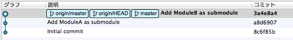
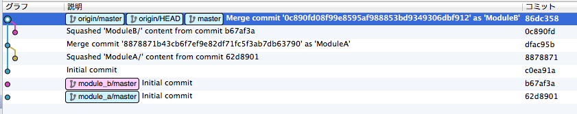
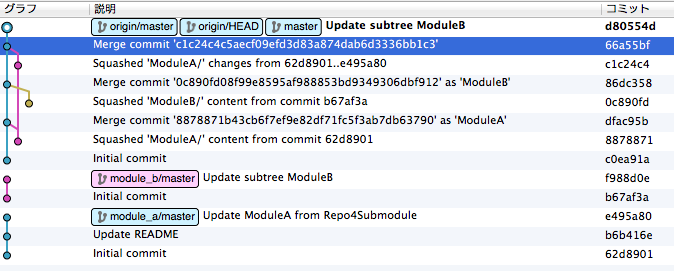

内容
- リポジトリ構成
- 初期化
- 更新の取り込み
- 更新の反映
- クローン
- 削除
- まとめ
リポジトリ構成
-
以下の構成で検証しました
- ModuleA
- ModuleB
- Repo4Submodule
- ModuleA : ModuleAをSubmoduleとして取り込み
- ModuleB : ModuleBを〃
- Repo4Subtree
- ModuleA : ModuleAをSubtree mergeで取り込み
- ModuleB : ModuleBを〃
初期化 - Git Submodule
-
以下のコマンドを実行
$ git submodule add path/to/ModuleA.git ModuleA
$ git add .
$ git commit -m “Add ModuleA as submodule”- Submodule追加後にコミットが必要
-
ModuleBについても同様にして初期化する
初期化 - Git Submodule
- 初期化直後のリポジトリ状態
- gitbucketにpushして確認(以下同様)

初期化 - Git Submodule
- ちなみにSubmoduleなリポジトリをGitHubで見ると

cjag / CJAG-APPS - https://github.com/cjag/CJAG-APPS
初期化 - Git Submodule
- 初期化直後のコミットグラフ
- SourceTreeにて確認(以下同様)

初期化 - Git Subtree
-
以下のコマンドを実行
$ git remote add -f module_a path/to/ModuleA.git
$ git subtree add –prefix=ModuleA/ –squash module_a master- subtree addの時点で自動的にコミットされる
-
ModuleBについても同様にして初期化する
初期化 - Git Subtree
- 初期化直後のリポジトリ状態

初期化 - Git Subtree
- 初期化直後のコミットグラフ

更新の取り込み - 準備
-
ModuleAの内容を直接更新
$ git add.
$ git commit -m “Update README”
$ git pull origin master
更新の取り込み - Git Submodule
-
一度Submoduleのディレクトリに入ってpullする
$ cd ModuleA
$ git pull origin master -
Submoduleから出てcommit
$ cd ../
$ git commit -am “Update ModuleA”
更新の取り込み - Git Submodule
-
もしくは、git submodule foreachを使う
$ git submodule foreach git pull
$ git commit -am “Update ModuleA” -
複数のSubmoduleを一括更新する場合に便利
更新の取り込み - Git Subtree
-
git subtree pullを使う
$ git subtree pull –prefix=ModuleA/ –squash module_a master
更新の反映 - Git Submodule
-
ModuleAを変更後、ModuleAのディレクトリに入ってcommit→pushする
$ cd ModuleA
$ git commit -am “Update ModuleA from Repo4Submodule”
$ git push origin master -
Submoduleから出てcommit→push
$ cd ../
$ git commit -am “Update Submodule ModuleA”
$ git push origin master
更新の反映 - Git Subtree
-
ModuleBを更新後、普通にcommit→pushする
$ git commit -am “Update subtree ModuleB”
-
git subtree pushでModuleBのリポジトリにpushする
$ git subtree push –prefix=ModuleB/ module_b master
Commit Graph - Git Submodule
- ここまでの操作のCommit Graphを確認

Commit Graph - Git Subtree

Submoduleに比べたらゴチャゴチャしてる…
クローン - Git Submodule
-
普通にCloneした後でsubmoduleコマンドで初期化する
$ git clone path/to/Repo4Submodule.git
$ git submodule init
$ git submodule update -
Clone時にSubmoduleも同時に初期化するには–recursive
$ git clone –recursive path/to/Repo4Submodule.git
クローン - Git Submodule
-
Clone直後はSubmoduleのbranchに注意する
$ cd ModuleA
$ git branch
* (detached from <commit hash>)
master -
全submoduleのbranchをmasterにするには
$ git submodule foreach git checkout master
※ master != push時のsubmodule
クローン - Git Subtree
-
Clone後にSubtreeのリポジトリを追加する
$ git clone path/to/Repo4Subtree.git
$ git remote add -f module_a path/to/ModuleA.git
$ git remote add -f module_b path/to/ModuleB.git※ ModuleA、ModuleBを修正しない(書き戻さない)ならクローンしただけでもOK
削除 - Git Submodule
-
Submoduleのディレクトリごと削除する場合はgit submodule deinitを使う
shell $ git submodule deinit ModuleA $ git rm ModuleA $ git commit -am "Delete submodule, ModuleA" $ rm -rf .git/modules/ModuleA- deinitでModuleAディレクトリの中身を(.gitディレクトリごと)空にする
- その後のgit rmで実際にSubmoduleが削除される
- 最後に.gitの中に残っているゴミを削除する
削除 - Git Submodule
- Submoduleとしては削除するが、ディレクトリは残したい場合
おしまい
ご静聴ありがとうございました